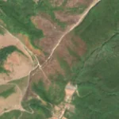
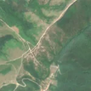

18,2 ha de pădure schimbată lângă Mărăuș
Între vara lui 2025 și 25 aprilie 2026, pe aproximativ 18,2 ha de pădure din comuna Beliu, lângă Mărăuș, județul Arad, imaginile Sentinel-2 arată că vegetația a dispărut sau s-a schimbat puternic. E o schimbare care merită verificată.
Autorizația de tăiere
de confirmat pe poze
N-am găsit o autorizație care să acopere zona, dar nu putem spune ce s-a întâmplat aici: analistul AI fie n-a văzut încă pozele, fie le-a văzut și nu e sigur. Nu dăm roșu pe o bănuială, și nici nu spunem că e în regulă. Analistul n-a putut spune ce s-a întâmplat aici din poze. Rămâne de verificat cu o imagine mai bună.
Ce se vede în poze: În poza detaliată zona marcată pare acoperită de pădure destul de deasă, dar în pozele din 2025 și 2026 se vede doar o culoare roșiatică-cenușie, fără porțiuni goale cu margini clare. Nu se poate spune sigur dacă e o tăiere, o rărire sau altă cauză, așa că nu putem acuza o tăiere rasă.


Înainte și după: Copernicus Sentinel-2, 10 m pe pixel, conturul zonei cu portocaliu. Poza detaliată (Esri World Imagery) e de acum 1–4 ani: arată ce era acolo înainte, nu tăierea.
Pe scurt
- Identificator
- 20260425_46583_22040
- Locul
- Mărăuș, comuna Beliu, județul Arad (SIRUTA 9930)
- Coordonate (centru)
- 46.58296, 22.03962 · Google Maps · OpenStreetMap
- Suprafața
- 18,2 ha (din pixeli de 10 m; ± câțiva pixeli pe margine)
- Pădurea întreagă
- în vara lui 2025 (de atunci, nori sau iarnă)
- Prima imagine cu schimbarea
- 25 aprilie 2026
- Imagini în care se vede schimbarea
- 8
- Cât de sigur e semnalul din satelit
- ridicată
- Terenul
- în afara amenajamentelor silvice publicate (pășune, mal de apă sau pădure privată fără amenajament în registru)
- Pădure pierdută în jur, alți ani
- 2007 (Hansen)
- Garda Forestieră
- Oradea
Dacă vrei să verifici sau să sesizezi
- Pădurile din județul Arad sunt în grija Gărzii Forestiere Oradea, care controlează tăierile și dă amenzile.
- Formularul Gărzii Forestiere Naționale primește sesizări și fără nume. Trimite linkul acestei pagini, coordonatele și pozele. Dacă tăierea e în desfășurare, sună la 112.
- Autorizațiile și transporturile de lemn se pot căuta în Inspectorul Pădurii.
Pagina arată ce se vede din satelit și ce scrie în registrul public; nu e o dovadă în sine.
Cum citezi zona
Linkul acestei pagini nu se schimbă. Dacă zona iese vreodată de pe hartă, pagina rămâne, cu data și cu ce știam despre ea.
Pădurea RO, zona 20260425_46583_22040: 18,2 ha, Mărăuș, comuna Beliu, județul Arad; schimbare văzută din satelit între vara lui 2025 și 25 aprilie 2026. https://iliemihai.github.io/padurea-ro/zona/20260425_46583_22040/ (consultat la [data]). Date: CC BY 4.0.
Datele zonei: GeoJSON · toate zonele: date deschise · licența CC BY 4.0.
Istoricul zonei pe hartă
Starea se poate schimba când registrul publică o autorizație sau când analistul vede poze mai bune. O ținem aici, ca un link citat să arate și ce spuneam atunci.
Pe hartă cel târziu din 5 noiembrie 2026.
- 5 noiembrie 2026 – azi · de confirmat pe poze
Detalii tehnice, pentru verificare
De ce acest nivel de încredere:
- văzută schimbată în 8 imagini diferite
- peste 3 ha
- pădurea din jur e neschimbată
- ultima dată am văzut-o intactă în vara lui 2025 (de atunci, nori sau zăpadă)
- AI-ul vede pădure dispărută
Ce a văzut analistul cu context: În Sentinel-2 BEFORE (2025-08) versantul are deja un ton brun-roz, iar în AFTER textura e pătată, fără margini ascuțite, fără cioate sau resturi vizibile; în vederea largă, pe versantul din nord-est, în afara conturului, apar pete întunecate cu ton similar, ceea ce sugerează uscare, defoliere sau o urmă veche de incendiu. Drumul de pământ traversează zona și continuă în afara ei, iar registrul nu arată autorizații, dar fără dovezi vizuale clare de sol dezgolit nu se poate alege taiere_rasa; coronamentul din 2000 de 43% e o indicație slabă împotriva pădurii închise, însă imaginea din 2021 arată pădure destul de densă.
- Placa Sentinel-2
- 34TES
- NDVI de referință
- 0.86
- NBR de referință
- 0.62
- Scăderea în pădurea din jur
- 0.0
- Persistență
- 0.95
- NDVI / NBR după
- 0.474 / 0.052
- Analistul de zi (model)
- taiere · 0.8 · claude-haiku-5-5
- Analistul cu context (model)
- neclar · 0.35
Cum se calculează fiecare: metodologia.
Pune harta zonei într-un articol
Copiază codul în articol (merge în majoritatea site-urilor de știri). Sau pune doar linkul: WhatsApp, Facebook și X arată singure poza zonei.